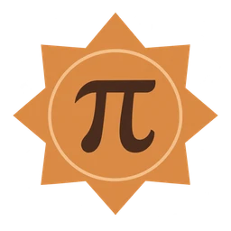

PICK A PIECE OF PI
One position. Four digits.Build your memory. Keep your streak.
LET THE NUMBERS FALL INTO PLACE
Spin the tumbler. Trust your memory.
Compare the whole answer with a number from 0 to 9999. No guess is spent.
Spin to unlock your hint.
14 seconds · 4 consecutive digits · a little nerve
02 / YOUR COLLECTION

THE ORDER OF CHAOS
Beat Chaos to earn your first mark of honor.
THE RULES OF THE IRRATIONAL
Choose a level and spin. The tumbler selects a decimal position in π. Position 1 is the first 1 in 3.14159.
If you land on 10, enter digits 10–13: 5897. A position near the end of your range can extend beyond it.
5897
In normal levels, you have 14 seconds after the drum stops and one guess. Reveal a hint once to see surrounding digits, at a cost of 3 seconds. If fewer than 3 seconds remain, the hint ends the round.
Chaos: any position up to 1,000,000. Three guesses, no time limit. Each guess stays on the board: green ✓ means the digit is in the right place, yellow ↔ means it belongs elsewhere, and gray × means no remaining match. Repeated digits are counted only as often as they appear in the answer. You can also use one HIGH/LOW hint per round without spending a guess: enter a number from 0 to 9999. HIGH means the answer is greater than your number; LOW means it is smaller. MATCH means it is equal, but you must still submit the answer with Check digits.
Your collection: win each normal level 1, 5, 10, or 30 times for Bronze, Silver, Gold, or Platinum. Each level has its own count; your highest medal is displayed. Every Chaos victory adds a mark of honor. Hints are allowed. Medals never expire, and are saved only in this browser.
Type all four digits, then press Enter or Check digits. On mobile, use the number keyboard. Sound can be switched off at any time.